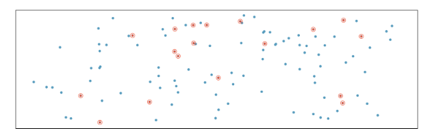
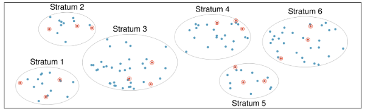
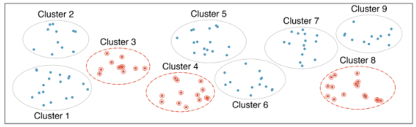
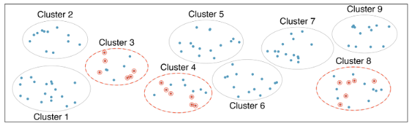

Section C
2026-08-28
Facilitator (person closest to the door): Make sure everyone has a chance to share.
Representative (person farthest from the door): Share your group’s uncommon commonality with the class
Facilitator (person closest to the door):
Make sure everyone has a chance to share.
Representative (person farthest from the door):
Share your group’s uncommon commonality with the class
# A tibble: 344 × 8
species island bill_length_mm bill_depth_mm flipper_length_mm body_mass_g sex year
<fct> <fct> <dbl> <dbl> <int> <int> <fct> <int>
1 Adelie Torgers… 39.1 18.7 181 3750 male 2007
2 Adelie Torgers… 39.5 17.4 186 3800 fema… 2007
3 Adelie Torgers… 40.3 18 195 3250 fema… 2007
4 Adelie Torgers… NA NA NA NA <NA> 2007
5 Adelie Torgers… 36.7 19.3 193 3450 fema… 2007
6 Adelie Torgers… 39.3 20.6 190 3650 male 2007
7 Adelie Torgers… 38.9 17.8 181 3625 fema… 2007
8 Adelie Torgers… 39.2 19.6 195 4675 male 2007
9 Adelie Torgers… 34.1 18.1 193 3475 <NA> 2007
10 Adelie Torgers… 42 20.2 190 4250 <NA> 2007
# ℹ 334 more rowsRows: 344
Columns: 8
$ species <fct> Adelie, Adelie, Adelie, Adelie, Adelie, Adelie, Adelie, Adelie…
$ island <fct> Torgersen, Torgersen, Torgersen, Torgersen, Torgersen, Torgers…
$ bill_length_mm <dbl> 39.1, 39.5, 40.3, NA, 36.7, 39.3, 38.9, 39.2, 34.1, 42.0, 37.8…
$ bill_depth_mm <dbl> 18.7, 17.4, 18.0, NA, 19.3, 20.6, 17.8, 19.6, 18.1, 20.2, 17.1…
$ flipper_length_mm <int> 181, 186, 195, NA, 193, 190, 181, 195, 193, 190, 186, 180, 182…
$ body_mass_g <int> 3750, 3800, 3250, NA, 3450, 3650, 3625, 4675, 3475, 4250, 3300…
$ sex <fct> male, female, female, NA, female, male, female, male, NA, NA, …
$ year <int> 2007, 2007, 2007, 2007, 2007, 2007, 2007, 2007, 2007, 2007, 20…Same data just presented differently!
Data is tidy - each row is an observation - each column is a variable - each entry is a single value (or NA)
bill_length_mm<fct> is factor - this is what R calls categorical<int> is integer - numerical<dbl> stands for double precision floating point - how computers handle numbers with decimalsNA?
Can physical measurements be used to determine sex in penguins?
From 2007 to 2009 Dr. Kristen Gorman and colleauges collected data to try to answer this and other questions.
What is the population in question?
Collect data for every case in the population -> census
Collect data for smaller fraction -> sample
Find (calculate) a numerical summary relevant to our question.
Goal: choose sample so that it accurately represents the population.
Challenges (making sure sample represents entire population)

Simple to understand, but often difficult to implement for large populations!

Population is divided into groups (strata). Then another method (e.g. simple random sampling) is used within each stratum.

Population divided into groups (clusters) and a fixed number of clusters are chosen (sampled). All observations within a cluster are used.
Again, clusters – but then sampling within the clusters.
Three separate populations: all Gentoo, Adelie, Chinstrap penguins in Palmer Archipelago region of Antarctica.
Q: How would you sample?
## For Thursday